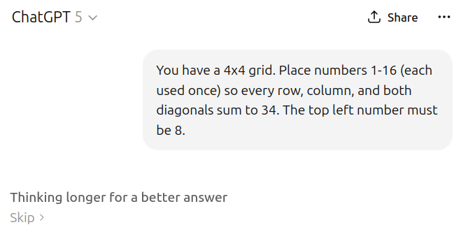
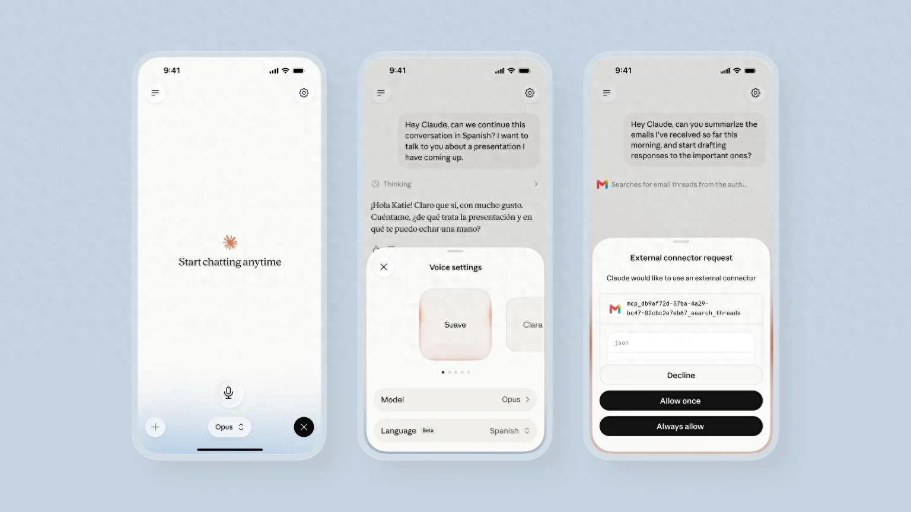

ChatGPT桌面版语音模式（图源：新闻媒体）
7月23日和24日，48小时内，两条消息几乎同时弹出来。
OpenAI宣布ChatGPT桌面版语音升级，Anthropic宣布Claude语音模式大改。我盯着屏幕看了半天，心想这事不简单。两家头部AI公司，选在48小时内，把语音这件事推到了一个新高度。
不是巧合。是信号。
用嘴使唤电脑这件事，终于不是科幻片里的桥段了。我自己等这一天等了很久。从2024年Sam Altman说"语音是下一代交互界面"开始（据Sam Altman公开言论），我就一直在等，等谁先把它做成真东西。现在两家同时交卷了，方向还完全不一样。一个往内卷，一个往外伸。
先说ChatGPT。7月24日，OpenAI发布公告，升级了ChatGPT桌面应用，这个应用已经跟Codex合体了。核心升级是引入ChatGPT Voice模式，由一个叫GPT-Live的模型驱动（据OpenAI官方公告）。
GPT-Live不是新东西。7月8日它就发布了，是OpenAI第一个真正的全双工语音大模型。什么叫全双工？我查了一下，就是输入流和输出流可以同时存在。模型一边跟你说话，一边还在听你说话，每秒多次判断该说、该听、该暂停还是该调用工具。旧版的响应延迟是1.0到2.5秒，新版压缩到"feels instant"，感觉是瞬时的（据OpenAI官方公告）。
这个延迟的变化，听起来是技术参数，用起来是体感天堑。1秒和0.1秒之间的差距，不是十倍快，是从"我在等它"变成"它在跟我聊"。
再说Claude。7月23日，Anthropic宣布对Claude的语音模式进行重大升级。Claude语音模式2025年就上线了，但之前默认只有Haiku一个模型驱动。这次升级后，正式支持Opus、Sonnet和Haiku三大模型。更关键的是，Claude语音模式正式接入了第三方应用，Gmail、Google Calendar、Slack、Canva、Notion，五个（据Anthropic官方公告）。
我第一次看到这两条消息的时候，期待很高。但坦率地讲，现实和期待之间，总是有落差的。两家走的是完全不同的路线，第一眼看过去就能感觉到。ChatGPT在炫肌肉，Claude在接管线。

ChatGPT界面（图源：Wikimedia Commons）
新版桌面应用里，用户可以在三个板块里用语音发起、检查或调整任务，分别是Chat、Work和Codex。Work是7月10日随GPT-5.6发布的，内置Codex，是个智能体（据OpenAI官方公告）。
我用它来规划一次商务旅行。按照官方示例的思路，我跟它说，帮我查一下日历有没有冲突，收件箱里有没有航班变更，再准备一下会议记录。然后我就去冲咖啡了。
说实话我也不确定它能不能真干完，但回来一看，它真在干。日历查了，收件箱翻了，会议记录的框架搭好了。所有这些，都是从一段语音对话里启动的多个工作流程。
这里有个细节值得说。GPT-Live自己负责低延迟的交互，后台委派GPT-5.5处理深度推理任务。你跟它说话的时候，是GPT-Live在接，真正干重活的是GPT-5.5。两套模型各司其职，一个负责嘴皮子利索，一个负责脑子转得深（据OpenAI官方公告）。
GPT-Live重新制作了9种语音，支持实时翻译、听写转写、语速控制。能在背景噪声里专注你的声音，还能实时生成视觉卡片，天气、股票、体育、地图都有。我试了一下问天气，它不光口头回答，还弹出来一张卡片，温度、湿度、未来三天趋势全在上面。这种"边说边看"的体验，以前在语音助手里是没有的。GPT-Live周活已经达到1.5亿用户（据OpenAI官方公告）。这个数字让我愣了一下，语音交互的渗透速度比我想的快太多了。
桌面版覆盖macOS和Windows，但只有Plus、Pro、Business、Edu和Enterprise计划的用户能用，Free用户不在名单里（据OpenAI官方公告）。GPT-Live-1面向Go、Plus、Pro付费用户，GPT-Live-1 mini面向Free用户，但桌面版整体把Free用户排除在外了。这里面的分层有点绕，mini给了免费用户一个尝鲜的口子，但真正的大餐在桌面版里，免费用户够不着。

Claude语音模式界面（图源：新闻媒体）
体验跟ChatGPT完全不同。Claude的思路是，你用语音说一个指令，它去调对应的外部工具。你说"给XX发封邮件说一下项目进度"，它就真的去Gmail里起草了。你说"明天下午三点加个会"，它就真的去Google Calendar里建了。说"在Notion里开个文档记一下今天的决定"，它也照办。
Anthropic说，用户开始把语音模式用于处理"真正的业务问题"，Haiku"保持对话快速，但并不总是深入"，Opus和Sonnet是"专为解决难题而设计"的更深层次模型（据Anthropic官方公告）。
用户开始将语音模式用于处理真正的业务问题。Haiku保持对话快速，但并不总是深入。Opus和Sonnet是专为解决难题而设计的更深层次模型。
我试了一下在对话中切换模型。先用Haiku聊了几句，速度确实快，但问到复杂问题就有点浅。切到Opus，深度明显上来了。默认会继承你在文本聊天里最后选的模型，自动匹配各模型里响应最快的版本。你可以在对话里自由切换，也可以在文本和语音模式之间无缝切换。这个无缝切换是我觉得Claude做得最聪明的地方，你不需要退出语音模式去打字，也不需要为了换个模型而中断对话节奏。
我还试了一下Canva的集成。跟它说"帮我做个项目汇报的封面图"，它真的去Canva里开了个设计稿。虽然出来的东西还得自己调，但那个起点已经有了。不用打开浏览器，不用找模板，说一句话就启动了。语言覆盖也广，正式支持10种语言，英语、法语、德语、印地语、印度尼西亚语、意大利语、日语、韩语、葡萄牙语（巴西）、西班牙语（拉美和西班牙）。已向所有平台的Beta测试用户开放（据Anthropic官方公告）。
最让我惊艳的瞬间，有两个。
第一个是ChatGPT的全双工加多Agent协调。我说一下冲咖啡那次的完整体验。我跟它说要规划出差，它同时启动了查日历、翻收件箱、准备会议记录三个任务。我说话的时候它在听，我说完它在干，我中途插话问"航班改了没"，它能立刻接上来回答，回答完继续干刚才的活。
那个感觉怎么说呢，像是有一个看不见的助理在你身后同时开了三个浏览器标签页，你问一句它答一句，答完接着干。你不用等它，它不用等你。
官方原话是这么说的，"所有这些都是在用户冲咖啡或做其他事情时完成的"（据OpenAI官方公告）。想想就觉得兴奋。你嘴里说一句话，背后是多个智能体在并行跑。这个体验是我过去两年用AI从没有过的。
第二个是Claude的模型切换。Haiku聊着聊着，我突然问了一个需要深度思考的问题。我没手动切，直接说了句"换个更强的模型"，它就切到Opus了。浅聊变深聊，无缝的。不，应该这么说，它不是"换了个模型"，是同一个人突然变聪明了。
一个让你动嘴，一个让你动手。
不完美的地方，也得说。真诚比吹捧值钱。
ChatGPT这边，Free用户用不了，这是第一个门槛。更要命的是，它暂时没法直接调用外部工具。你想让它去Gmail里发邮件？做不到。它能在自己的Chat、Work、Codex三个板块里协调，但碰不到外面的应用。这个限制挺致命的，因为你日常的工作流大半都在外部应用里。我试了一下让它帮我回邮件，它说它做不了。那一刻我才意识到，全双工再酷，碰不到你的收件箱，就是个聪明但封闭的岛。
Claude这边，最大的限制是回合制。它还没采用全双工架构，你得等它说完才能说。不能打断，不能边听边说。习惯了ChatGPT那种随时插话的体验之后，Claude的回合制会让人觉得慢一拍。说真的，回合制这个限制挺影响体验的。语音交互最自然的形态就是随时插话，你让我等你说完，那个流畅感就断了。好比你跟人聊天，对方每说一句话你都得等他说完才能接，那种对话节奏是累的。
语言切换也要手动来。免费用户只能用Haiku，而且最多连1个外部应用。付费订阅用户才能解锁全部模型选择和多应用协作（据Anthropic官方公告）。这里的分层逻辑很清楚，但免费用户能体验到的东西确实有限。
全双工，边听边说，能协调多Agent并行干活。但碰不到外部应用，免费用户进不来。
能调Gmail、Slack、Notion等5个应用，能在Opus和Sonnet间切。但回合制，不能打断。
| 维度 | ChatGPT Voice（桌面版） | Claude Voice Mode |
|---|---|---|
| 架构 | 全双工（GPT-Live），边听边说 | 回合制，等用户说完再回复 |
| 核心理念 | 语音控制多智能体 | 语音调用外部工具 |
| 外部工具 | 暂无法直接调用外部工具 | 可调用Gmail、Slack、Notion等5个应用 |
| 多智能体 | 可协调Work和Codex多个Agent并行 | 无多智能体协调能力 |
| 模型切换 | 后台自动委派GPT-5.5 | 用户可手动在Opus/Sonnet/Haiku间切换 |
| 计划覆盖 | Plus/Pro/Business/Edu/Enterprise | Beta用户（免费用户受限） |
| 平台 | macOS、Windows桌面端 | 全平台 |
| 视觉输出 | 实时生成天气/股票/地图等视觉卡片 | 无实时UI生成 |
两种路线，一个要当你的嘴，一个要当你的手。
ChatGPT的全双工加多Agent，是让你用嘴指挥电脑，同时跑好几摊事。Claude的语音加外部工具，是让你用嘴去操作那些你每天都要用的应用。一个往内走，在自己生态里铺开Agent网络。一个往外走，把手伸进你已有的工作流里。
FourWeekMBA的创始人提出过一个"缰绳理论"。语音接口不再是ChatGPT的附加功能，而是产品本体。用户越习惯某个语音助手的风格和节奏，迁移成本就越高。接口即护城河（据FourWeekMBA分析）。这个判断我认同。语音不是附加功能，是新的操作系统。谁先让你养成用嘴干活的习惯，谁就先锁住了你。
对ElevenLabs这种做TTS的单点厂商来说，GPT-Live包揽了全双工、推理、UI生成，差异化空间被压缩得很厉害。对国产语音大模型，阿里CosyVoice、字节豆包语音、讯飞星火语音，短期享受全双工蓝海红利，长期面临OpenAI的降维压力。这不是危言耸听，1.5亿周活这个数字摆在那，护城河已经在挖了。
我自己也还在摸索这两条路到底哪条会更早变成日常。但有一件事我越来越确定，语音交互不是某个功能的升级，是交互范式的切换。就像触屏替代键盘那样，语音会重新定义我们跟机器说话的方式。以前的交互是你去适应机器的规则，打字、点击、滑动。语音交互是机器来适应你的节奏，你怎么说，它怎么接。这个方向的翻转，比任何单个功能都重要。
48小时里，两家公司给出了两个答案。市场会用脚投票。
参考资料，OpenAI官方公告（2026年7月24日），Anthropic官方公告（2026年7月23日），Sam Altman 2024年公开言论，FourWeekMBA"缰绳理论"分析。
以上。如果对你有帮助，欢迎转发。